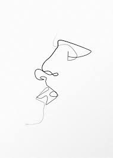
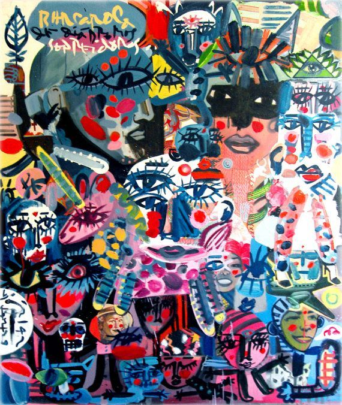
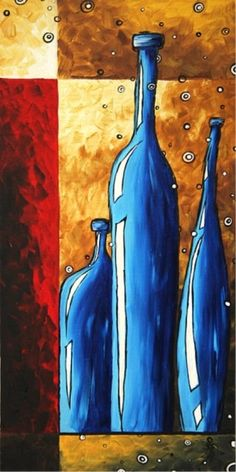
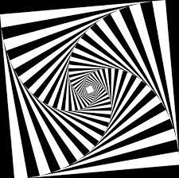
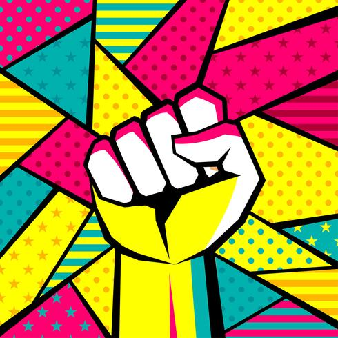

El arte minimalista es algo simple o que carece de mucha variación (en color, textura, imágenes).
En mi caso, este dibujo minimalista representa un poco la simpleza y belleza de la vida.
| Mi dibujo minimalista | Otro ejemplo |
|---|---|
|  |
El maximalismo exalta la decoración a través de una mezcla de estilos, dando importancia a la ornamentación y la sofisticación, dejando a un lado la funcionalidad.
Esta vez, el dibujo representa sofisticación desde una perspectiva un poco más colorida e informal. Es como una forma de ser formal e informal al mismo tiempo.
| Mi dibujo maximalista | Otro ejemplo |
|---|---|
|  |
Arte conceptual es el nombre de un movimiento artístico en el que el concepto tiene prioridad sobre el objeto.
En esta ocasión, el dibujo representa un poco la complejidad que la sencillez de algunas cosas y/o circunstancias de la vida.
| Mi dibujo conceptual | Otro ejemplo |
|---|---|
|  |
Es arte abstracto y contemporáneo que se basa en crear objetos cambiantes con movimietno real o virtual para producir ilusiones ópticas.
Aqui nuevamente podemos hacernos una idea de lo abstracto que puede ser el movimiento de una imagen (haciendonos creer que esta en movimiento cuando es una imagen estática).
| Mi dibujo cinético | Otro ejemplo |
|---|---|
|  |
Los artistas pop art hacían uso de diversos materiales, y se servían de cualquier objeto que fuera representativo del consumismo.
Finalmente, este ultimo dibujo hace referencia a la representación del consumismo de manera inmoderada, llamando la atención por la cantidad de colores que presenta.
| Mi dibujo pop art | Otro ejemplo |
|---|---|
|  |